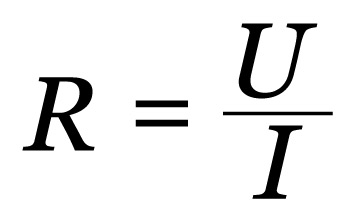

Primeira e Segunda lei de Ohm
1.1 Introdução
A primeira Lei de Ohm afirma que a corrente elétrica é diretamente proporcional à diferença de potência aplicada. Já a segunda Lei de Ohm, diz que a resistência elétrica do condutor tem relação direta com constituição do material e é proporcional ao seu comprimento. A Segunda lei de Ohm relaciona as características físicas que determinam a resistência de um condutor:
A resistência elétrica é determinada pela resistividade elétrica (𝜌), a área da seção transversal (A) do condutor e seu comprimento(L)
Fundamentos Teóricos
Cada material apresenta uma resistência distinta que é calculada pela razão entre a tensão (U) e a corrente elétrica(i) no material, para a compreensão da resistência elétrica nos materiais, que a priori tratam-se das dificuldades de movimento, enfrentada pelos elétrons nos condutores, quando submetido a uma diferença de potencial.
A resistência elétrica é determinada pela resistividade elétrica (𝜌), a área da seção transversal (A) do condutor e seu comprimento(L)
Montagem:
Observe a disposição de cada componente na Figura 1. Os elementos que serão analisados serão o resistor, que está associado em paralelo com o LED, e o potenciômetro. A análise do resistor consistirá no registro das tensões e da corrente para averiguação da Primeira Lei de Ohm. O potenciômetro, tem sua resistência modificada quando alterada a posição angular do seu eixo de rotação. Essa modificação ocorre devido a variação no comprimento do condutor. Nesse caso, o potenciômetro demonstrará a aplicabilidade da Segunda lei de Ohm.
O calor latente de vaporização da água é de 540 cal/g. Ou seja, são necessárias 540 cal para evaporar 1 g de água a 100 °C. Nesse caso, a quantidade de calor necessária (Q) é proporcional à massa da substância (m):
Materiais e componentes utilizados:
• Arduino
• Fios jumpers
• 2 resistores de 330Ω (laranja-laranja-marrom)
• 01 Potenciômetros 10kΩ
• 01 LED
• Multímetro (opcional)

Execução e coleta de dados:
Depois de fazer todos os procedimentos, conecte seu Arduino ao computador e faça o upload do código. Abra o Monitor Serial (crtl+shift+m) e verifique se os valores são mostrados. Se tudo estiver correto ao findar o upload e iniciar o monitor serial será exibido informações parecidas com estas:
Código:
/*MESTRADO NACIONAL PROFISSIONAL EM ENSINO DE FÍSICA-SBF
* INSTITUTO FEDERAL DE CIÊNCIA E TECNOLOGIA DO CEARÁ-IFCE
* UNIVERSIDADE ESTADUAL VALE DO ACARAÚ-UVA
* PRODUTO DESENVOLVIDO POR: OSÉIAS DE SOUSA MOURÃO
*
* Programa destinado para estudo das Leis de Ohm
*/
#define potenPin 0 // define a entrada analógica para o
Potenciômetro
#define voltPin 2 // define a entrada analógica para o resistor
float Rx; // variável que armazena valor da resistência em
OHM do potenciômetro 0 a 10k
float R0; // variável que armazena valor da resistência
float corrente; // variável para armazenar valor da corrente
float voltvalor; // cria variável para armazenar o valor da tensão
do RESISTOR observado
float potenvalor; // cria variável para armazenar valor da
resistência 0 a 1023.
float U;
float Ux;
void setup()
{
Serial.begin(9600); //inicial a serial
Serial.println(".....................................................");
Serial.println("MESTRADO NACIONAL PROFISSIONAL EM ENSINO DE FISICA -
MNPEF");
Serial.println("PRODUTO DESENVOLVIDO POR: OSEIAS MOURAO");
Serial.println(".....................................................");
delay(2000);//Pausa de 2 segundos
Serial.println(".....................................................");
Serial.println("PRIMEIRA E SEGUNDA LEI DE OHM");
Serial.println(".....................................................");
delay(2000); //Pausa de 2 segundos
Serial.println(".....................................................");
R0 = 330; // Você pode editar o valor de R. resistencia em Ohms para
saber o valor exato use um ohmimetro, ou veja o código de cores para
valor aproximado
Serial.println("Medidas para um Resistor de 330");
Serial.println(".....................................................");
delay(2000); //Pausa de 2 segundos
}
void loop()
{
voltvalor = analogRead(voltPin);// Lê o valor registrado no resistor e
armazena na variável "voltvalor"
potenvalor = analogRead(potenPin);// Lê o valor registrado no
potenciometro e armazena na variável "potenvalor"
U = voltvalor/204.6;
corrente = U/R0;//relação matemática para 1ª lei de Ohm.
Rx = -((potenvalor/102.3)-10);
Serial.println("....................................................");
Serial.print("Resistencia do potenciometro em quiloohm Rx="); //Imprime
na serial O TEXTO ENTRE ASPAS.
Serial.println(Rx); //Imprime na serial o valor da resistencia do
potenciometro
Serial.print("Tensao (em Volts) no Resistor R U= "); //Imprime na
serial "tensão(em volts) = "
Serial.println(U); //Imprime na serial o valor lido
Serial.print("Corrente (em Ampere) no Resistor R i= ");
Serial.println(corrente, 6); //Imprime na serial o valor lido com 6
casas decimais
Serial.println(".....................................................");
delay(2000); //Aguarda 2 segundos
}
Os valores que serão exibidos a cada 2 segundos serão: a resistência Rx do potenciômetro em quiloohms(kΩ); a tensão U (em volts) no resistor R; e a corrente i (em ampère) no resistor R, conforme Quadro 3 Enquanto o Monitor exibe os valores, gire cuidadosamente o potenciômetro variando sua resistência, partindo do seu mínimo até o máximo. Registre na tabela 1 a seguir os valores exibidos no monitor. Depois de fixada a posição do potenciômetro, caso as medidas oscilem, anote os valores que mais se repetem, ou para maior precisão, calcule a média aritmética dos valores.